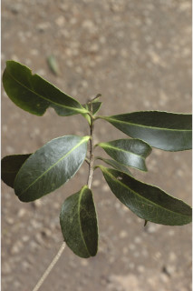
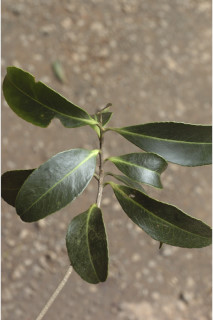
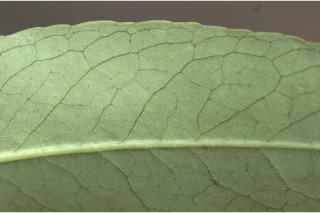
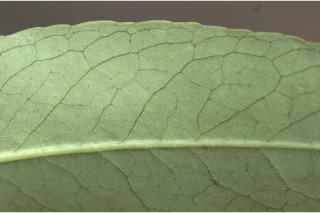
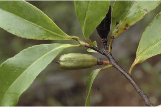
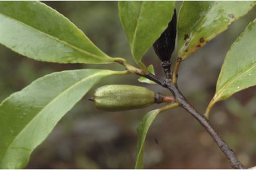

Trees up to 10 m tall.
10 ಮೀ. ಎತ್ತರದವರೆಗಿನ ಸಣ್ಣ ಮರಗಳು.
Trees up to 10 m tall.
மரங்கள் 10 மீ. உயரம் வரை வளரக்கூடியது.
Bark greyish, smooth; blaze brownish.
ತೊಗಟೆ ಬೂದು ಬಣ್ಣದಲ್ಲಿದ್ದು,ನಯವಾಗಿರುತ್ತದೆ;ಕಚ್ಚು ಮಾಡಿದ ಜಾಗ ಕಂದು ಬಣ್ಣದ ಛಾಯೆ ಹೊಂದಿರುತ್ತದೆ.
Bark greyish, smooth; blaze brownish.
மரத்தின் பட்டை சாம்பல் நிறமானது, வழுவழுப்பானது; உள்பட்டை ப்ரவுன் நிறமானது.
Branchlets subterete, glabrescent.
ಕಿರುಕೊಂಬೆಗಳು ಉಪದುಂಡಾಗಿದ್ದು, ಉದುರುರೋಮಗಳಸಹಿತವಿರುತ್ತವೆ.
Branchlets subterete, glabrescent.
சிறியநுனிக்கிளைகள் குறுக்குவெட்டுத் தோற்றத்தில் கிட்டதட்ட வளையமானது, நுண்ணிய உரோமங்களுடையது அல்லது உரோமங்களற்றது.
Leaves simple, alternate, spiral; petiole 0.2-1 cm long, planoconvex in cross section, glabrescent; lamina 5-10.5 x 1.5-7 cm, elliptic to elliptic-oblong, apex obtuse or acute to shortly acuminate with retuse tip, base cuneate, margin serrate, pubescent when young at least on midrib beneath, coriaceous, dark green and shining above, pale beneath; midrib slightly canaliculate above; secondary_nerves 8-14 pairs, not raised, looped near margin; tertiary_nerves obscure or broadly reticulate if visible.
ಎಲೆಗಳು ಸರಳವಾಗಿದ್ದು ಪರ್ಯಾಯ ಮತ್ತು ಸುತ್ತು ಜೋಡನಾ ವ್ಯವಸ್ಥೆಯಲ್ಲಿರುತ್ತವೆ; ತೊಟ್ಟುಗಳು 0.2 – 1 ಸೆಂ.ಮೀ.ವರೆಗಿನ ಉದ್ದವಿದ್ದು,ಅಡ್ಡ ಸೀಳಿದಾಗ ಸಪಾಟ ಪೀನ ಮಧ್ಯದ ಆಕಾರದಲ್ಲಿದ್ದು, ಉದುರುರೋಮಗಳ ಸಹಿತವಾಗಿರುತ್ತವೆ; ಪತ್ರಗಳು 5 – 10.5 X 1.5–7 ಸೆಂ.ಮೀ. ಗಾತ್ರ,ಅಂಡವೃತ್ತ - ಚತುರಸ್ರದ ಆಕಾರ, ಚೂಪಲ್ಲದ ಅಥವಾ ಚೂಪಾದ ಮಾದರಿಯಿಂದ ಅಗಲವಾದ ಹಾಗೂ ದುಂಡನೆಯ ತುದಿ ಮತ್ತು ತಗ್ಗುಳ್ಳ ಅಗ್ರ ಹೊಂದಿದ ಕಿರಿದಾದ ಕ್ರಮೇಣ ಚೂಪಾಗುವ ತುದಿ,ಬೆಣೆಯಾಕಾರದ ಬುಡ ,ಗರಗಸ ದಂತಿತವಾದ ಅಂಚು ಹೊಂದಿದ್ದು ಎಳೆಯದಾಗಿದ್ದಾಗ ಪತ್ರದ ತಳಭಾಗದ ಮಧ್ಯನಾಳದ ಮೇಲಾದರೂ ಮೃದುತುಪ್ಪಳದಿಂದ ಕೂಡಿರುತ್ತವೆ,ಪತ್ರಗಳ ಮೇಲ್ಮೈ ತೊಗಲನ್ನೋಲುವ ಮಾದರಿಯಲ್ಲಿದ್ದು,ಕಡುಹಸಿರು ಬಣ್ಣ ಮತ್ತು ಹೊಳಪನ್ನುಳ್ಳ ಮೇಲ್ಭಾಗ,ಮಾಸಲು ಬಣ್ಣದ ತಳಭಾಗವನ್ನು ಹೊಂದಿರುತ್ತವೆ;ಮಧ್ಯನಾಳ ಪತ್ರದ ಮೇಲ್ಭಾಗದಲ್ಲಿ ಸ್ವಲ್ಪಮಟ್ಟಿನ ಕಾಲುವೆಗೆರೆ ಸಮೇತವಿರುತ್ತದೆ;ಎರಡನೇ ದರ್ಜೆಯ ನಾಳಗಳು 8 – 14 ಜೋಡಿಗಳಿದ್ದು,ಮೇಲೆದ್ದಿರುವುದಿಲ್ಲ ಹಾಗೂ ಅಂಚಿನ ಬಳಿ ಕುಣಿಕೆಗೊಂಡಿರುತ್ತವೆ; ಮೂರನೇ ದರ್ಜೆಯ ನಾಳಗಳು ಅಸ್ಪಷ್ಟವಾಗಿರುತ್ತವೆ ಅಥವಾ ಕಾಣುವಂತಿದ್ದರೆ ವಿಶಾಲ ಜಾಲಬಂಧ ನಾಳ ವಿನ್ಯಾಸದಲ್ಲಿರುತ್ತವೆ.
Leaves simple, alternate, spiral; petiole 0.2-1 cm long, planoconvex in cross section, glabrescent; lamina 5-10.5 x 1.5-7 cm, elliptic to elliptic-oblong, apex obtuse or acute to shortly acuminate with retuse tip, base cuneate, margin serrate, pubescent when young at least on midrib beneath, coriaceous, dark green and shining above, pale beneath; midrib slightly canaliculate above; secondary_nerves 8-14 pairs, not raised, looped near margin; tertiary_nerves obscure or broadly reticulate if visible.
இலைகள் தனித்தவை, மாற்றுஅடுக்கமானவை, சுழல் போன்று அமைந்தவை; இலைக்காம்பு 0.2-1 செ.மீ. நீளமானது, குறுக்குவெட்டுத் தோற்றத்தில் பிளேனோகான்வக்ஸ், நுண்ணிய உரோமங்களுடையது அல்லது உரோமங்களற்றது; இலை அலகு 5-10.5 X 1.5-7 செ.மீ., நீள்வட்ட முதல் நீள்வட்டம்-நீள்சதுர வடிவானது, அலகின் நுனி மெட்டையானது அல்லது கூரியது முதல் குட்டையான அதிக்கூரியதுடன் அதன் முனையில் சிறு பிளவுடையது (ரெட்யூஸ்), அலகின் தளம் ஆப்பு வடிவானது, அலகின் விளிம்பு ரம்ப பற்களுடையது, இளம்பருவத்தில் அலகின் கீழ்பரப்பில் மையநரம்பு உரோமங்களுடையது, கோரியேசியஸ், கரும்பச்சை நிறமானது மற்றும் அலகின் மேற்பரப்பு பளபளப்பானது, அலகின் கீழ்பரப்பு வெளிறியது; மையநரம்பு மேற்புறத்தில் அலகின் பரப்பைவிட சிறிது பள்ளமானது; இரண்டாம் நிலை நரம்புகள் 8-14 ஜோடிகள், ஒன்றொடுன்று விளிம்பின் அருகில் (லுப்) இணைந்தவை; மூன்றாம் நிலை நரம்புகள் மற்றும் பிற நரம்புகள் கண்களுக்கு புலப்படாது அல்லது அகன்ற வலைப்பின்னல் போன்றவை.
Flowers large, solitary, white, terminal or axillary at twig ends; pedicel 0.2-0.5 cm long.
ಹೂಗಳು ದೊಡ್ಡ ಗಾತ್ರದವುಗಳಾಗಿದ್ದು,ಒಂಟಿಯಾಗಿದ್ದು ಬಿಳಿ ಬಣ್ಣದಲ್ಲಿದ್ದು ಕುಡಿಕೊಂಬೆಗಳ ತುದಿಯಲ್ಲಿ ಅಥವಾ ಅಕ್ಷಾಕಂಕುಳಿನಲ್ಲಿರುತ್ತವೆ;ಹೂತೊಟ್ಟುಗಳು ಅಂದಾಜು 0.2 – 0.5 ಸೆಂ.ಮೀ.ಉದ್ದವಿರುತ್ತವೆ.
Flowers large, solitary, white, terminal or axillary at twig ends; pedicel 0.2-0.5 cm long.
மலர்கள் பெரியவை, தனித்தவை, வெள்ளை நிறமானது, தண்டின் நுனியில் அல்லது தண்டின் நுனியிலுள்ள இலைக்கோணங்களில் அமைந்தவை; மலர்காம்பு 0.2-0.5 செ.மீ. நீளமானது.
Capsule, loculicidal, oblong, woody, up to 3 cm long, 5-valved; seeds many, with white wings at one end.
ಸಂಪುಟ ಫಲಗಳು ಕೋಶಗಳ ಬೆನ್ನು ಭಾಗದ ಮೂಲಕ ಬಿರಿಯುವ ಮಾದರಿಯ -ವುಗಳಾಗಿದ್ದು, ಚತುರಸ್ರಾಕಾರದಲ್ಲಿದ್ದು ,3 ಸೆಂ.ಮೀ. ವರೆಗಿನ ಉದ್ದವಿದ್ದು, 5 – ಕೋಶಗಳನ್ನೊಳಗೊಂಡಿರುತ್ತವೆ; ಬೀಜಗಳ ಸಂಖ್ಯೆ ಹಲವಾರು ಇದ್ದು ಒಂದು ತುದಿಯಲ್ಲಿ ಬಿಳಿ ರೆಕ್ಕೆಯನ್ನು ಹೊಂದಿರುತ್ತವೆ.
Capsule, loculicidal, oblong, woody, up to 3 cm long, 5-valved; seeds many, with white wings at one end.
வெடிகனி (கேப்சியூல்), அறைகள் இணையுமிடத்தில் வெடிக்க கூடியது, நீள்சதுர வடிவானது, தடித்தவை, 3 செ.மீ. நீளமானது, 5-அறைகளுடையது; விதைகள் எண்ணற்றது, அதன் ஒர் பக்கத்தில் வெள்ளை நிறமான இறகுடையது.


 

 



 
